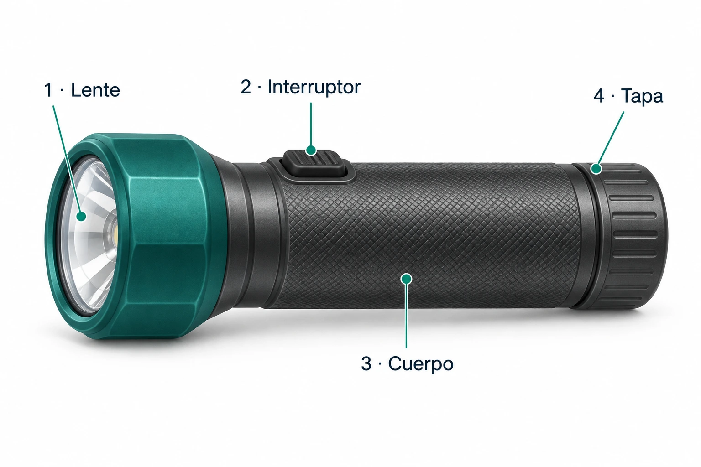

INICIO · 5 min · 4°C · Electricidad
Activación de conocimientos previos
- Observen el equipo de la imagen.
- Digan: ¿para qué sirve?
- Recuerden una instrucción del taller. ¿Qué la hace clara?

INICIO · 2 min · 4°C · Electricidad
Normas de la clase
- Escuchen y respeten los turnos.
- Todos leen y escriben.
- No se permite el uso de celular.
INICIO · 3 min · 4°C · Electricidad
Objetivo de la clase
Reescribir información técnica para un principiante, conservando su sentido y apoyándola con imágenes.
Hoy harán el primer borrador de un manual ilustrado.
Formen tríos y preparen la guía imprimible o tres hojas. Proyecto: cuatro sesiones de 90 minutos. El manual final se entrega en la clase 4.
DESARROLLO · Modelamiento con ejemplo · 5 min
Observen cómo se reescribe
«Accione el mecanismo para activar la iluminación».
«Presiona el interruptor para encender la linterna».
- Lean las dos frases.
- Digan qué cambió y qué se mantuvo.
- Ubiquen el interruptor en la imagen.

DESARROLLO · 10 min
Reescriban juntos
- Lean la frase y subrayen la advertencia.
- Escriban una versión más clara en el cuaderno.
- Léanla en voz alta. Comprueben que conserva la advertencia.
Comparen después de responder
Hay otras versiones válidas. No inventen acciones ni eliminen riesgos.
DESARROLLO · 15 min
Lean y respondan
Abrir lectura e imágenes- Lean las cuatro secciones. Todos leen.
- Anoten en la hoja 1: ¿para qué sirve el equipo?
- Anoten en la hoja 1 las indicaciones y en la hoja 3 las advertencias.
- Marquen una duda para consultar la próxima clase.
Solo lean y escriban. No operen equipos.

DESARROLLO · Actividad y monitoreo · 15 min
Completen las hojas 1 y 2
- Escriban el nombre del equipo y sus integrantes.
- Expliquen su función en dos frases propias.
- Reescriban las cuatro indicaciones en la hoja 1.
- Hoja 2: completen la tabla con el nombre y la función de las seis partes.
Durante el trabajo, muestren una frase al docente. Comprueben la acción y la advertencia en la lectura.
Escriban en la plantilla impresa o en sus tres hojas. Esta página no guarda respuestas.
DESARROLLO · 15 min
Completen la hoja 3
- Expliquen qué muestra la imagen general.
- Escriban las dos advertencias y un cuidado.
- Expliquen cuándo pedir ayuda.
- Agreguen la segunda imagen. Digan qué indicación aclara.
- Anoten la fuente. Registren su duda en la hoja 1.

DESARROLLO · 10 min
Revisen con otro grupo
- Intercambien los borradores de tres páginas.
- Ubiquen una parte usando la leyenda.
- Expliquen una indicación y una advertencia.
- Marquen una frase que no se entienda.
- Recuperen su borrador y corrijan esa frase.
Comprueben leyendo, no usando el equipo.
CIERRE · 10 min
Revisión y metacognición
- Revisión o plenario: compartan una frase corregida. Comprueben que conserva la información y orienta al principiante.
- Sistematización: leer → identificar acción y riesgo → reescribir → comprobar.
- Metacognición: cada integrante escriba en su cuaderno qué frase cambió, por qué y cómo comprobó su sentido.
- Muestren las tres páginas y su duda al docente. Guarden el borrador para la clase 2.
Ejemplo de respuesta individual
«Cambié “accione” por “presiona” para que un principiante entienda la acción. Mantuve el nombre “interruptor” y lo comprobé en el texto y la imagen».
Esta página no recibe archivos ni registra entregas. La entrega final será al docente en la clase 4.